Entrena.
Registra.
Mejora.
ImberGym es tu diario de entrenamiento para el gimnasio, en casa y al aire libre: planes, ejercicios animados, récords y estadísticas, además de rutas GPS con Trackshow, nutrición y suplementos. Sin cuenta, sin nube: tus datos se quedan en tu móvil.
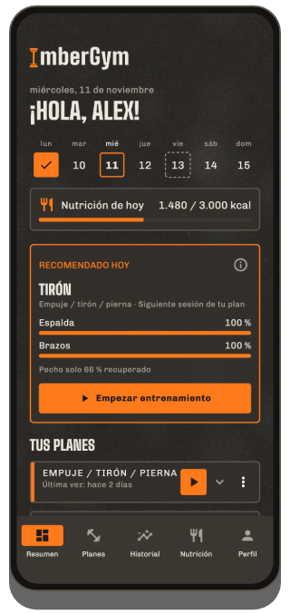
Qué hace ImberGym
Planes y plantillas
Tus propios planes con sesiones, series, repeticiones y descansos, o plantillas listas: desde cuerpo completo para principiantes hasta empuje/tirón/pierna, calistenia y yoga. Duración estimada en directo para cada sesión.
Compartir planes por código QR
El plan entero cabe en un código QR: tu compañero de entreno lo escanea y lo tiene al instante. Sin servidor, sin cuenta.
Entrenamiento activo
Un ejercicio por página, los últimos valores rellenados, sugerencias de progresión, superseries, ajustes de máquina guardados. Temporizador de descanso también en la pantalla de bloqueo: se puede desactivar, con la señal que elijas (gong, campana, silbato…) y vibración opcional.
Ejercicios animados
Cada uno de los 259 ejercicios muestra su movimiento con una figura, los músculos implicados, el ritmo y consejos de técnica.
Récords
Peso máximo, 1RM estimado, volumen, repeticiones, distancia y ritmo: «¡Nuevo récord!» justo después de la serie.
Estadísticas y mapa corporal
Semana, mes o 3 meses con la variación, distribución por grupo muscular, mapa corporal con recuperación, progreso por ejercicio y resúmenes semanales y anuales para compartir. Todos los entrenamientos por meses, filtrables por plan y ejercicio.
Pulso del reloj y de la banda
ImberGym obtiene el pulso de tu reloj para cada entrenamiento vía Health Connect. Con una banda pectoral Bluetooth lo ves en directo durante el entreno, con zonas de pulso y descanso según el pulso.
Varios gimnasios
Añade los lugares donde entrenas: ImberGym detecta dónde estás al empezar y muestra el gimnasio en tu historial y en el calendario.
Cuerpo
Peso y grasa corporal con media de 7 días, también directamente desde tu báscula vía Health Connect. Fotos de progreso con plantilla superpuesta para la misma pose y comparación antes/después; las fotos se quedan dentro de la app.
Nutrición
Más de 1.200 alimentos sin conexión, registrados con un toque. Escáner de códigos de barras (Open Food Facts), recetas con calculadora de raciones y objetivo de calorías opcionalmente dinámico según tu actividad. Se puede desactivar por completo.
Suplementos
Tus propios productos con cantidad habitual, botón «Tomado», calendario y recordatorios los días que elijas, sin sugerencias de dosis.
Calendario, copia e importación
Entrenamientos en el calendario del dispositivo si quieres. Copia de seguridad para cambiar de móvil, importación desde Strong y Hevy, exportación CSV.
Tabata e intervalos
Tabata, HIIT, 30/30 o EMOM: como inicio rápido o como bloque en tu plan. Cuenta atrás grande y avisos antes de cada cambio, incluso con el móvil bloqueado.
Así es ImberGym
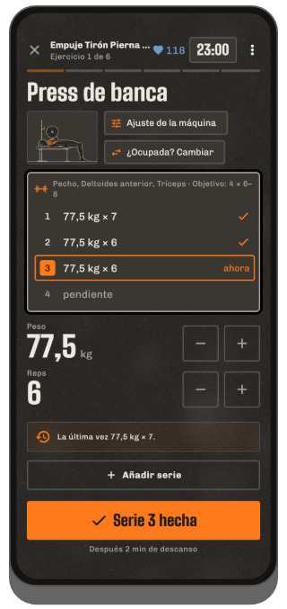
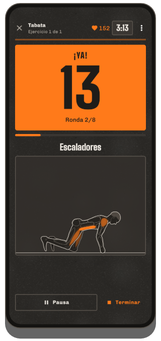
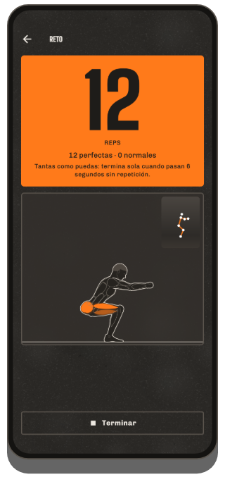
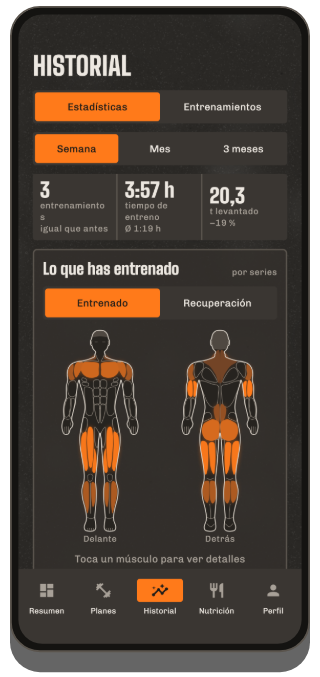
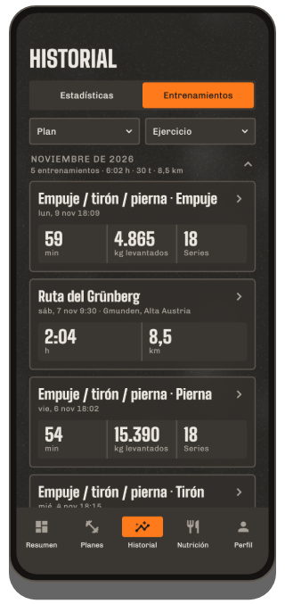
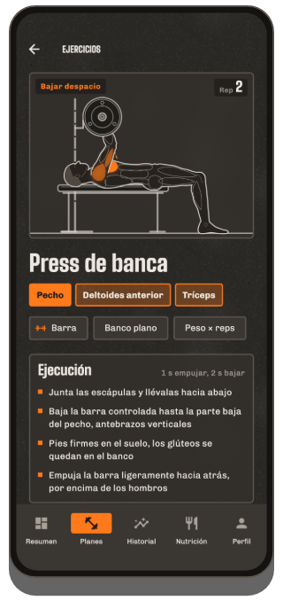
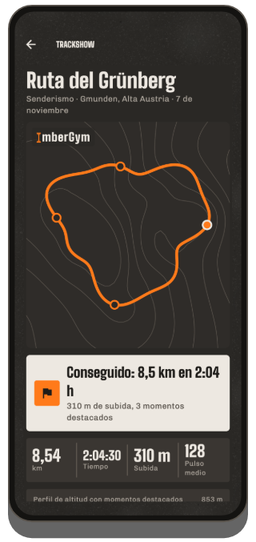
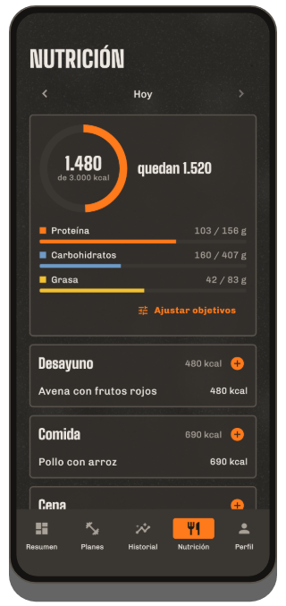
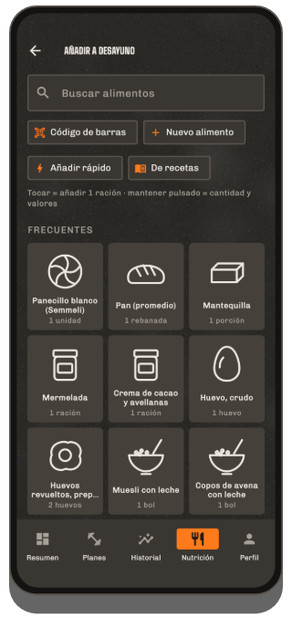
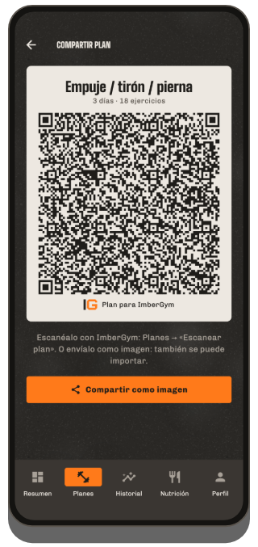
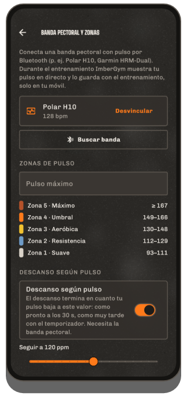
Fuera de casa
Grabación GPS
Correr, bici, senderismo: distancia, ritmo o velocidad y desnivel con el barómetro. Sigue grabando con la pantalla apagada, se pausa en los semáforos y se reanuda sola después de una parada.
Trackshow
Tu ruta como un vuelo de cámara sobre curvas de nivel con momentos destacados como el tramo más empinado, el punto más alto y el kilómetro más rápido, para compartir como imagen de historia o vídeo.
Exportación GPX
Cada grabación se puede exportar como archivo GPX y abrir en otras apps.
Gratis y Premium
Gratis
- Entrenamientos completos con temporizador de descanso
- Hasta 5 planes y 5 ejercicios propios, todas las plantillas
- Base de datos de ejercicios con animaciones
- Historial, récords, estadísticas, resumen semanal y anual
- Pulso del reloj vía Health Connect, banda pectoral en directo con zonas y descanso según el pulso
- Suplementos con recordatorios, reto con contador de repeticiones por cámara
- Contador de calorías con catálogo de alimentos y código de barras, peso
- Pasar planes por código QR, compartir entrenamientos como tarjeta
Premium
- Planes y ejercicios propios ilimitados, importar planes por código QR
- Mapa corporal, recuperación, evolución de grasa corporal y peso
- Entrenamiento por intervalos (Tabata y más)
- Aire libre con GPS, Trackshow en vídeo
- App para el reloj (Wear OS)
- Gimnasios, tarjetas de socio, fotos de progreso
- Todas las recetas, objetivo de calorías dinámico
1,99 € al mes, 14,99 € al año o un único pago de 29,99 € (de por vida, precio de lanzamiento; después 39,99 €) a través de Google Play: pruébalo gratis 7 días después de tu primer entrenamiento.
Preguntas frecuentes
¿Necesito una cuenta?
No. ImberGym funciona sin registro y sin servidor propio.
¿Dónde se guardan mis datos?
Solo en tu móvil. No hay nube, ni publicidad, ni análisis. Más detalles en la política de privacidad.
¿Funciona la app sin conexión?
Sí. Solo dos cosas usan internet: buscar un código de barras desconocido en Open Food Facts y el nombre del lugar de una ruta GPS (para ello se envía el punto de inicio al servicio de ubicación de Android). Todo lo demás funciona sin conexión.
¿Cómo llega el pulso de mi reloj a ImberGym?
A través de Health Connect, el almacén de datos de salud de Android. En la app de tu reloj, activa Health Connect y permite «Frecuencia cardiaca»: pueden hacerlo, entre otras, Samsung Health, Garmin Connect, Fitbit, Polar Flow, Withings y Zepp (Amazfit). Después toca «Cargar pulso del reloj» en los detalles del entrenamiento en ImberGym. Huawei: Huawei Health no escribe en Health Connect; la app «Health Sync» (Play Store) puede transferir los datos: origen Huawei Health, destino Health Connect, selecciona «Frecuencia cardiaca». Consejo: inicia también un entrenamiento en el reloj para que mida de forma continua.
¿Qué bandas pectorales funcionan?
Cualquier banda pectoral Bluetooth con el perfil estándar de frecuencia cardiaca, p. ej. Polar H9/H10, Garmin HRM-Dual o Wahoo TICKR. Vincúlala una vez en el perfil, en «Banda pectoral y zonas»: después se conecta sola cada vez que entrenas.
¿Cómo comparto un plan?
En el editor del plan, toca el icono QR y muestra el código o envíalo como imagen. La otra persona lo escanea en la pestaña «Planes» con «Escanear plan», también desde una imagen. Todo el plan va dentro del código, no se sube nada.
Cambio de móvil: ¿qué pasa con mis datos?
En el perfil, en «Datos y copia de seguridad», crea una copia y guárdala p. ej. en Google Drive. En el móvil nuevo, elige «¿Móvil nuevo? Restaurar copia de seguridad» en la primera pantalla.
Vengo de Strong o Hevy: ¿puedo traer mis entrenamientos?
Sí. Importa la exportación CSV de tu app anterior en «Datos y copia de seguridad» → «Importar entrenamientos». ImberGym asigna los ejercicios y primero muestra una vista previa.
¿Se suben mis fotos de progreso?
No. Se guardan en una carpeta privada de la app, no aparecen en la galería e incluso quedan excluidas de las copias de seguridad de Android.
¿Puedo ocultar la nutrición?
Sí. Toda la sección se puede desactivar en el perfil: ImberGym queda como un diario de entrenamiento puro.
¿Cómo borro mis datos?
Las entradas sueltas directamente en la app; todo a la vez desinstalando la app.